User Manual
Goal
This use manual should enable you to use the HelloDATA platform and illustrate the features of the product and how to use them.
→ More about the Platform and its architecture you can find on Architecture & Concepts.
Navigation
Portal
The entry page of HelloDATA is the Web Portal.
- Navigation to jump to the different capabilities of HelloDATA
- Extended status information about
- data pipelines, containers, performance and security
- documentation and subscriptions
- User and profile information of logged-in user.
- Overview of your dashboards

Business & Data Domain
As explained in Domain View, a key feature is to create business domains with n-data domains. If you have access to more than one data domain, you can switch between them by clicking the drop-down at the top and switch between them.

Dashboards
The most important navigation button is the dashboard links. If you hover over it, you'll see three options to choose from.
You can either click the dashboard list in the hover menu (2) to see the list of dashboards with thumbnails, or directly choose your dashboard (3).
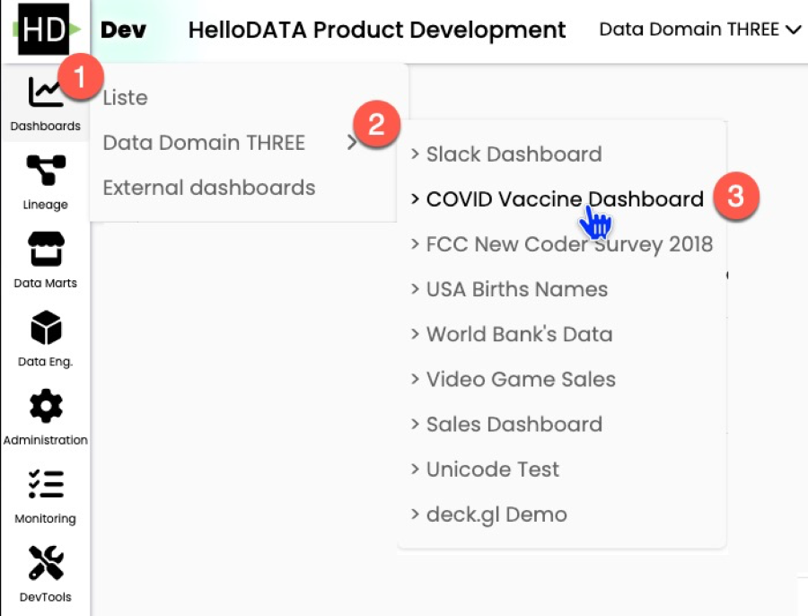
Data-Lineage
To see the data lineage (dependencies of your data tables), you have the second menu option. Again, you chose the list or directly on "data lineage" (2).
Button 2 will bring you to the project site, where you choose your project and load the lineage.

Once loaded, you see all sources (1) and dbt Projects (2). On the detail page, you can see all the beautiful and helpful documentation such as:
- table name (3)
- columns and data types (4)
- which table and model this selected object depends on (5)
- the SQL code (6)
- as a template or complied
- and dependency graph (7)
- which you can expand to full view (8) after clicking (7)
- interactive data lineage view (9)
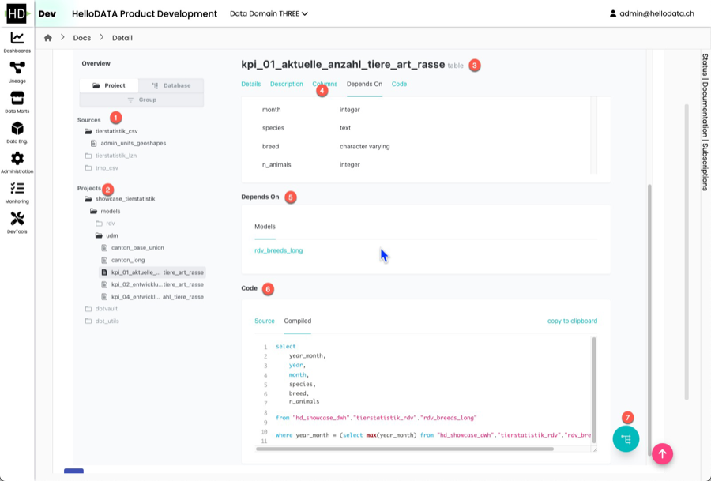 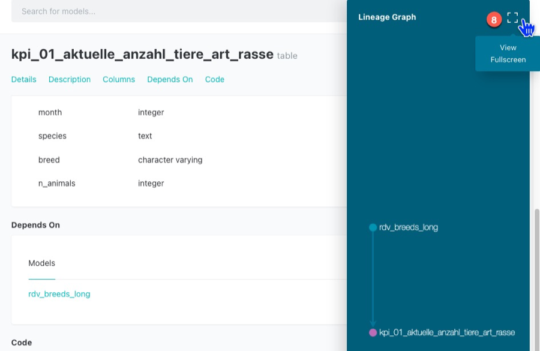 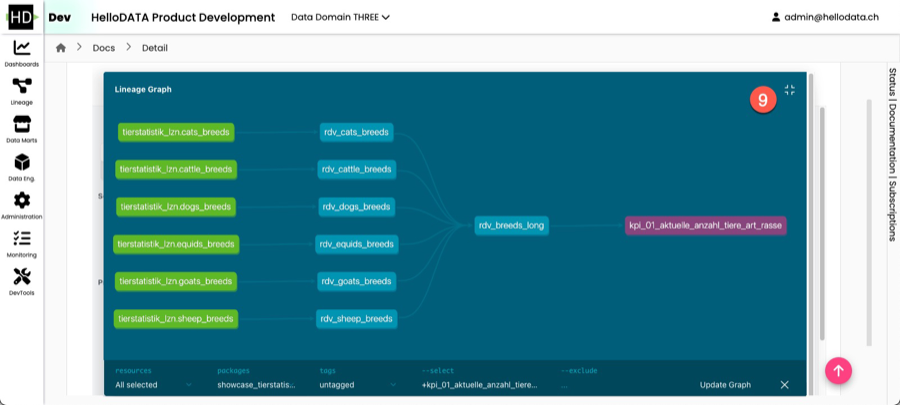
Data Marts Viewer
This view let's you access the universaal data mart (udm) layer:

These are cleaned and modeled data mart tables. Data marts are the tables that have been joined and cleaned from the source tables. This is effectively the latest layer of HelloDATA BE, which the Dashboards are accessing. Dashboards should not access any layer before (landing zone, data storage, or data processing).
We use CloudBeaver for this, same as the DWH Viewer later.

Data Engineering
DWH Viewer
This is essentially a database access layer where you see all your tables, and you can write SQL queries based on your access roles with a provided tool (CloudBeaver).
Create new SQL Query
 o
o
Choose Connection and stored queries
You can chose pre-defined connections and query your data warehouse. Also you can store queries that other user can see and use as well. Run your queries with (1).

Settings and Powerful features
You can set many settings, such as user status, and many more.
 Please find all setting and features in the CloudBeaver Documentation.
Please find all setting and features in the CloudBeaver Documentation.
Orchestration
The orchestrator is your task manager. You tell Airflow, our orchestrator, in which order the task will run. This is usually done ahead of time, and in the portal, you can see the latest runs and their status (successful, failed, etc.).
- You can navigate to DAGs (2) and see all the details (3) with the DAG name, owner, runs, schedules, next run and recent.
- You can also dive deeper into Datasets, Security, Admin or similar (4)
- Airflow offers lots of different visualization modes, e.g. the Graph view (6), that allows you to see each step of this task.
- As you can see, you can choose calendar, task duration, Gantt, etc.
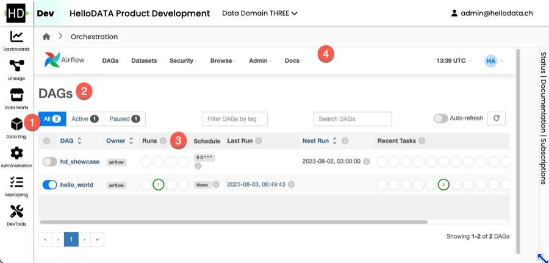 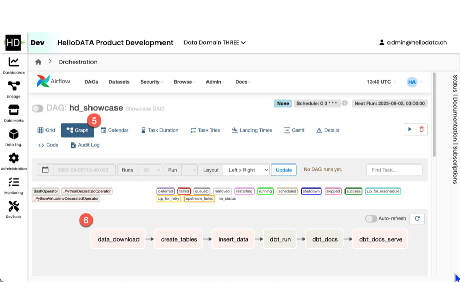
Administration
Here you manage the portal configurations such as user, roles, announcements, FAQs, and documentation management.

Benutzerverwaltung / User Management
Adding user
First type your email and hit enter. Then choose the drop down and click on it.

Now type the Name and hit Berechtigungen setzen to add the user:

You should see something like this:

Changing Permissions
- Search the user you want to give or change permission
- Scroll to the right
- Click the green edit icon

Now choose the role you want to give:

And or give access to specific data domains:

See more in role-authorization-concept.
Portal Rollenverwaltung / Portal Role Management
In this portal role management, you can see all the roles that exist.
Warning
Creating new roles are not supported, despite the fact "Rolle erstellen" button exists. All roles are defined and hard coded.

Creating a new role
See how to create a new role below:

Ankündigung / Announcement
You can simply create an announcement that goes to all users by Ankündigung erstellen:

Then you fill in your message. Save it.
 You'll see a success if everything went well:
You'll see a success if everything went well:

And this is how it looks to the users — It will appear until the user clicks the cross to close it.

FAQ
The FAQ works the same as the announcements above. They are shown on the starting dashboard, but you can set the granularity of a data domain:

And this is how it looks:

Dokumentationsmanagement / Documentation Management
Lastly, you can document the system with documentation management. Here you have one document that you can document everything in detail, and everyone can write to it. It will appear on the dashboard as well:

Monitoring
We provide two different ways of monitoring:
- Status:
- Workspaces
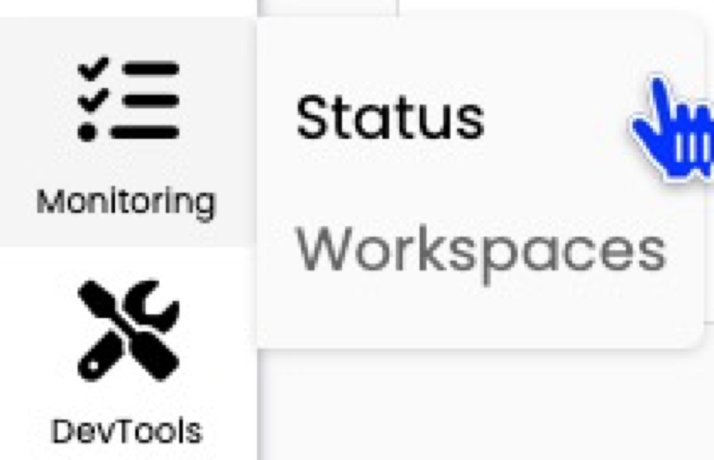
Status
It will show you details information on instances of HelloDATA, how is the situation for the Portal, is the monitoring running, etc. 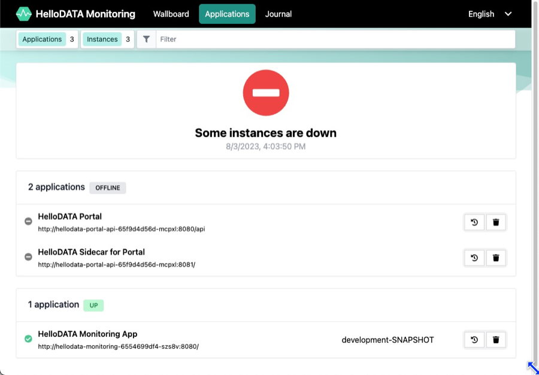
Data Domains
In Monitoring your data domains you see each system and the link to the native application. You can easily and quickly observer permission, roles and users by different subsystems (1). Click the one you want, and you can choose different levels (2) for each, and see its permissions (3).
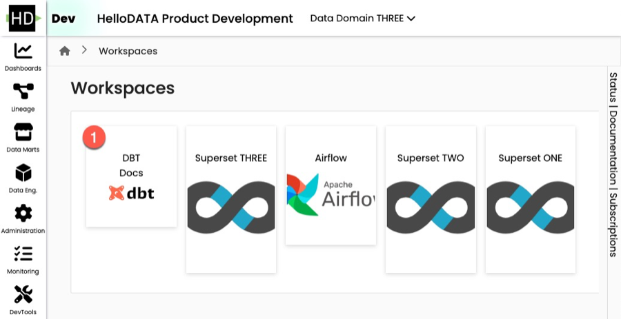
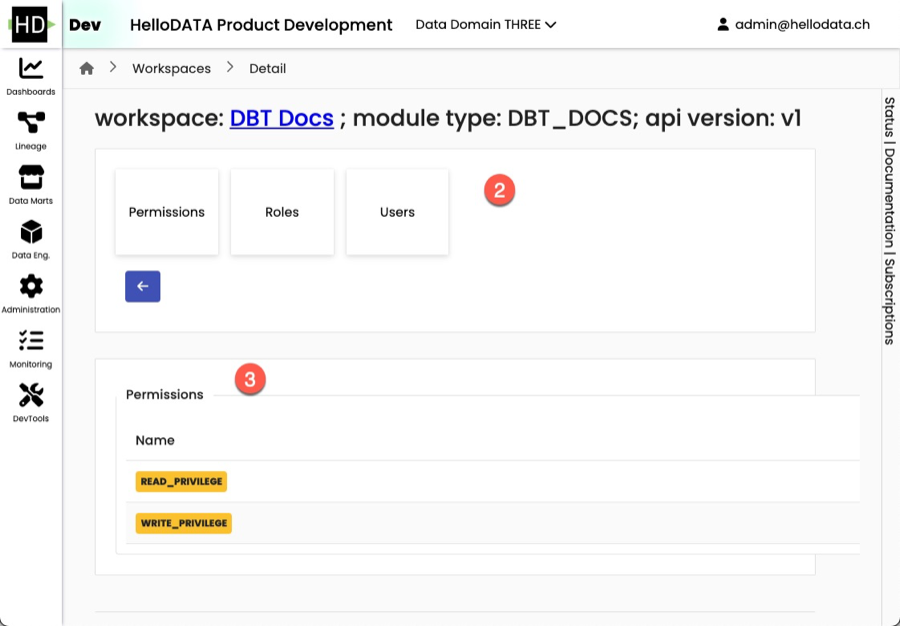
By clicking on the blue underlined DBT Docs, you will be navigated to the native dbt docs. Same is true if you click on a Airflow or Superset instance.
DevTools
DevTools are additional tools HelloDATA provides out of the box to e.g. send Mail (Mailbox) or browse files (FileBrowser).
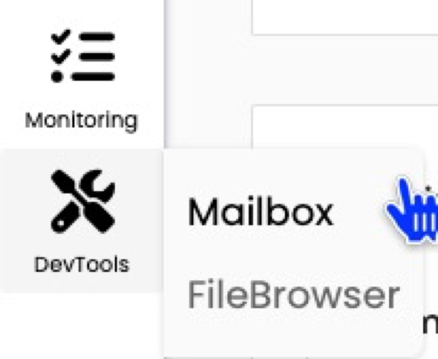
Mailbox
You can check in Mailbox (we use MailHog) what emails have been sending or what accounts are updated.|

FileBrowser
Here you can browse all the documentation or code from the git repos as file browser. We use FileBrowser here. Please use with care, as some of the folder are system relevant.
Log in
Make sure you have the login credentials to log in. Your administrator should be able to provide these to you.
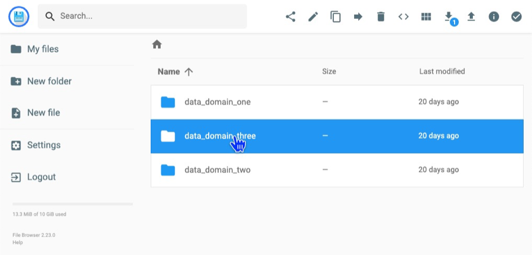
More: Know-How
- More help for Superset
- More help for dbt:
- More about Airflow
Find further important references, know-how, and best practices on HelloDATA Know-How.